連続時間モデルの作成
このデモでは、tf、zpk、ss、および frd の各コマンドを使用して連続時間線形モデルを作成する方法を示します。
目次
LTI モデルのタイプ
Control System Toolbox™ には、線形時不変 (LTI) モデルの 4 つの基本的表現を作成する関数が用意されています。
- 伝達関数 (TF) モデル
- 零点-極-ゲイン (ZPK) モデル
- 状態空間 (SS) モデル
- 周波数応答データ (FRD) モデル
これらの関数は、モデル データを入力として、このデータを単一の MATLAB® 変数に組み込むオブジェクトを作成します。
伝達関数モデルの作成
伝達関数 (TF) は LTI システムの周波数領域表現です。SISO 伝達関数は多項式の比です。
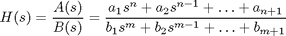
伝達関数は、その分子多項式 A(s) と分母多項式 B(s) によって指定されます。MATLAB では、多項式はその係数のベクトルによって表現されます。たとえば、多項式
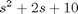
は、[1 2 10] として指定されます。
伝達関数
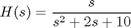
を表現する TF オブジェクトを作成するには、分子多項式と分母多項式を指定し、tf を使用します。
num = [ 1 0 ]; % Numerator:s den = [ 1 2 10 ]; % Denominator:s^2 + 2 s + 10 H = tf(num,den)
Transfer function:
s
--------------
s^2 + 2 s + 10
別の方法として、このモデルをラプラス変数 s の有理式として指定することもできます。
s = tf('s'); % Create Laplace variable H = s / (s^2 + 2*s + 10)
Transfer function:
s
--------------
s^2 + 2 s + 10
零点-極-ゲイン モデルの作成
零点-極-ゲイン (ZPK) モデルは因数分解型の伝達関数です。
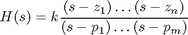
このようなモデルは、分子 (零点) の根 z と分母 (極) の根 p を明示します。スカラー係数 k はゲインと呼ばれます。
ZPK モデル
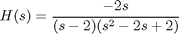
を作成するには、極、零点、およびゲイン k のベクトルを指定します。
z = 0; % Zeros p = [ 2 1+i 1-i ]; % Poles k = -2; % Gain H = zpk(z,p,k)
Zero/pole/gain:
-2 s
--------------------
(s-2) (s^2 - 2s + 2)
TF モデルに関しては、このモデルを s の有理式として指定できます。
s = zpk('s');
H = -2*s / (s - 2) / (s^2 - 2*s + 2)
Zero/pole/gain:
-2 s
--------------------
(s-2) (s^2 - 2s + 2)
状態空間モデルの作成
状態空間 (SS) モデルは LTI システムの時間領域表現です。

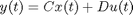
x(t) は状態ベクトル、u(t) は入力ベクトル、y(t) は出力軌道です。
状態空間モデルは、システム ダイナミクスを記述する微分方程式から導出されます。たとえば、単純な電気モーターの 2 次 ODE を考えます。
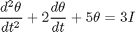
I は駆動電流 (入力)、theta は回転子の角変位 (出力) です。この ODE は、状態空間表現で書き換えることができます。
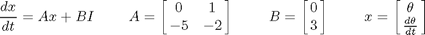
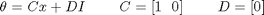
このモデルを作成するには、状態空間行列 A, B, C, D を指定し、ss を使用して SS オブジェクトを作成します。
A = [ 0 1 ; -5 -2 ]; B = [ 0 ; 3 ]; C = [ 1 0 ]; D = 0; H = ss(A,B,C,D)
a =
x1 x2
x1 0 1
x2 -5 -2
b =
u1
x1 0
x2 3
c =
x1 x2
y1 1 0
d =
u1
y1 0
Continuous-time model.
周波数応答データ モデルの作成
周波数応答データ (FRD) モデルを使用すると、システムの測定済みまたはシミュレート済みの複雑な周波数応答を LTI オブジェクトに保存できます。次に、このデータを、周波数領域の解析と設計のための代わりのモデルとして使用できます。
たとえば、周波数アナライザーから以下のデータが得られると仮定します。
- 周波数 (Hz): 10, 30, 50, 100, 50010, 30, 50, 100, 500
- Response:0.0021+0.0009i, 0.0027+0.0029i, 0.0044+0.0052i, 0.0200-0.0040i, 0.0001-0.0021i
以下を使用して、このデータを含む FRD オブジェクトを作成できます。
freq = [10, 30, 50, 100, 500]; resp = [0.0021+0.0009i, 0.0027+0.0029i, 0.0044+0.0052i, 0.0200-0.0040i, 0.0001-0.0021i]; H = frd(resp,freq,'Units','Hz')
Frequency(Hz) Response
------------- --------
10 2.100e-003 + 9.000e-004i
30 2.700e-003 + 2.900e-003i
50 4.400e-003 + 5.200e-003i
100 2.000e-002 - 4.000e-003i
500 1.000e-004 - 2.100e-003i
Continuous-time frequency response.
Units をヘルツと指定しなければ、周波数値が rad/s と見なされることに注意してください。
MIMO モデルの作成
tf、zpk、ss、および frd の各コマンドを使用すると、SISO と MIMO の両モデルを作成できます。TF モデルまたは ZPK モデルの場合は通常、単純な SISO モデルを連結することで MIMO モデルを作成するという方法が便利です。たとえば、2x2 MIMO 伝達関数
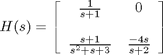
を作成するには、以下を使用します。
s = tf('s');
H = [ 1/(s+1) , 0 ; (s+1)/(s^2+s+3) , -4*s/(s+2) ]
Transfer function from input 1 to output...
1
#1: -----
s + 1
s + 1
#2: -----------
s^2 + s + 3
Transfer function from input 2 to output...
#1: 0
-4 s
#2: -----
s + 2
LTI モデルの解析
Control System Toolbox には、LTI モデルを解析するための広範な関数が用意されています。これらの関数は、I/O のサイズおよび次数に関する簡単なクエリから、高度な時間応答および周波数応答の解析まで多岐にわたります。
たとえば、上で指定した MIMO 伝達関数 H のサイズ情報を取得するには、以下のように入力します。
size(H)
Transfer function with 2 outputs and 2 inputs.
極を計算するには、以下のようにします。
pole(H)
ans = -1.0000 -0.5000 + 1.6583i -0.5000 - 1.6583i -2.0000
このシステムが安定しているかどうかを尋ねるには、以下のようにします。
isstable(H)
ans =
1
最後に、以下のように入力して、ステップ応答をプロットできます。
step(H)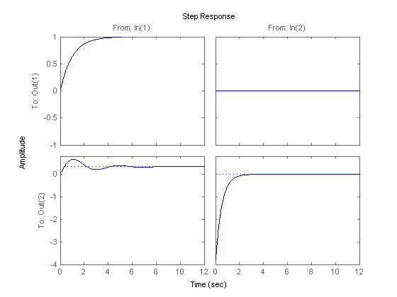
詳細は、「モデル解析」デモを参照してください。